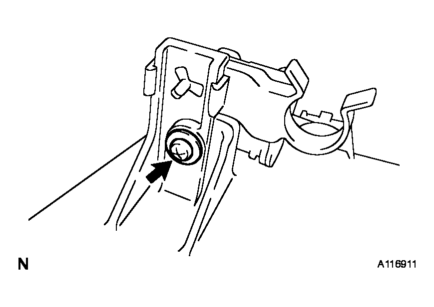
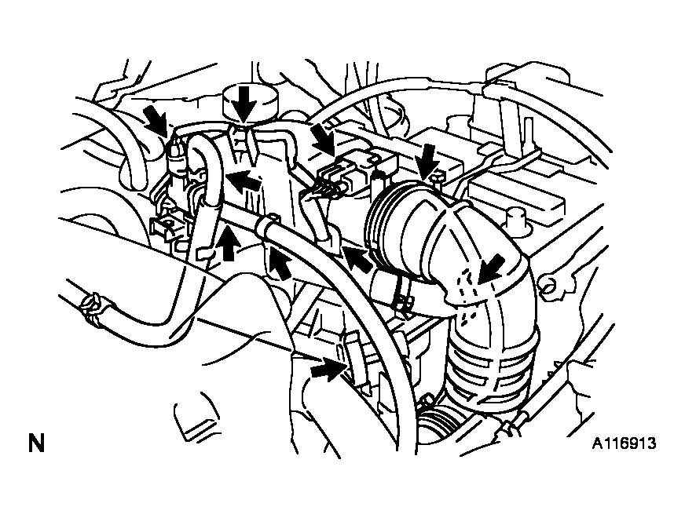

Vacuum Switching Valve: Installation
- INSTALL PURGE VSV
- Install the purge VSV with the screw.

Courtesy of © TOYOTA, LICENSE AGREEMENT TMS1002
- INSTALL AIR CLEANER CAP
- Install the air cleaner cap and tighten the hose clamp.
- Lock the 2 clamps holding the air cleaner cap to the air cleaner case.
- Connect the purge line hose to the hose clamp.
- Connect the 2 purge line hoses.
- Connect the 2 wire harness clamps to the air cleaner cap.
- Connect the purge VSV connector.
- Connect the MAF meter connector.

Courtesy of © TOYOTA, LICENSE AGREEMENT TMS1002
- CONNECT CABLE TO NEGATIVE BATTERY TERMINAL